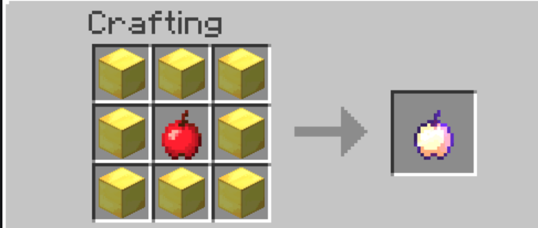
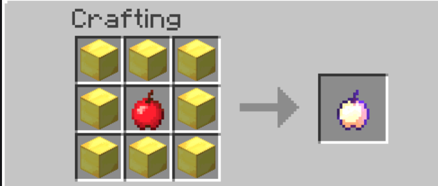

The go-to information center for all of Nichi's features
Map & Terrain
Nichi's map was originally created sometime during 2011 on version in Minecraft Beta 1.7.
The world was created specifically to generate the farlands using an NBT editor and have a singleplayer survival save centered around them.
Only about the first 50-60 thousand blocks away from spawn are original beta terrain.
(There are other patches of original beta terrain far from spawn including the OG farlands. They have no chunk trails since they were traveled to with NBT)
While updating Nichi's map to modern Minecraft, some of Beta chunks near spawn were corrupted, and either resulted in modern terrain appearing in some areas, or modern structures merging with original beta terrain. These are affectionately referred to as Nichi spawn oddities.
Gameplay & Mechanics
Nether Reactors
One of Nichi's more notable features is Nether Reactors; A mimic of an old MCPE feature where a slice of the nether could be brought into the overworld, since pocket edition couldn't handle the entire nether dimension.
Crafting recipe and activation method are the same as the original. Must be activated with a sword and will temporarily disrupt the day and night cycle by turning the overworld into midnight upon activation.
Old Combat
Removed hit timer and bow animation cooldown. Combat from the beta days has been brought back into the server.
Backwards & Fowards Compatibility
Although the server is running on modern Minecraft, any java client on release 1.4.7 – Latest is able to join the server. This is done thanks to mappings which allow users on older clients to use modern features and items.
Beta & Bedrock Edition Crossplay
Nichi is one of the first, if not, the first public no-resets Java + Bedrock survival crossplay server in Minecraft – having used DragonProxy in early 2020 and switching over to GeyserMC in July.
Beta crossplay will allow versions even older than release to play on the server running on latest version, it is currently in the experimental stage and not available to the public yet.
Beta Item Features!
Reimplemented the ability to craft Enchanted Golden Apples using Gold Blocks and Apples.
Zombies drop Feathers (as well as Rotten Flesh)
Golem Guards
Buy the loyalty of a guard by right clicking it with a nether star.
This will make you the owner of said guard until it dies.
Once hired, golems will not attack their owners under any circumstances.
However, they will be aggressive towards any other players who come into render distance.
You can create a whitelist of players that the golems will never attack by renaming a piece of paper with the individual's username.
(works for Bedrock and players by including the astrisk)
Golem Possession
By crafting a Golem Possessor, you will be able to steal the loyalty of enemy guards, possibly shifting the tide of a pvp encounter
Waypoint Travel
Both variants of the old indev houses now generate in new chunks,
inside the houses are special beacons which can be used to "discover" the waypoint once activated, you can then travel to any of your activated waypoints by typing /waypoint.
The waypoints are indestructible, but can be rendered inoperational,
By crafting a waypoint activator and placing it atop on of the beacons, the waypoint is now "discoverable" and can be used to fast travel, breaking this activator will disable the waypoint.
NOTE: Only players who have travelled to the waypoint before will be able to use it.
New players who have not travelled to it before will not be able to use it even if the waypoint is active for other players
 
